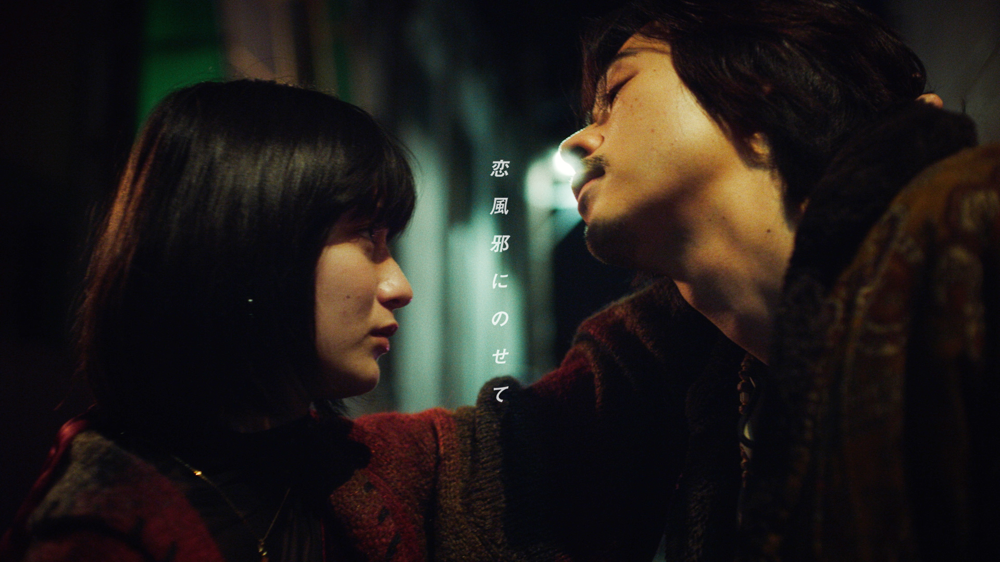

NEWS
-
【チケット先行情報更新】初の日本武道館公演2days決定！

◼︎プレリザーブ先行
https://w.pia.jp/t/vaundy-budokan/
受付期間：2020/3/25（金）18:00 〜 4/3（日）23:59
◼︎プレイガイド最速先行 ※受付終了
プレイガイド最速先行
受付期間：2022年3月15日（火）18:00 〜 3月22日（火）23:59
◼︎チケット SNS先行 ※受付終了
https://pia.jp/v/vaundy22sns/
受付期間：：2022年02月22日(火) 18:00～2022年03月07日(月) 23:59
2/23発売 CD「裸の勇者」(初回プレス分)にもチケット先行シリアルナンバー入りチラシ封入が決定!
●CDのご購入はこちら
◼︎チケット オフィシャル最速先行 ※受付終了
https://pia.jp/v/vaundy22hp/
受付期間：2022年2月5日（土）20:00 〜 2022年2月21日（月）23:59
Vaundy one man live tour at 日本武道館
日時 : 2022/9/8（木） 18:00 開場 / 19:00 開演
会場 : 日本武道館（東京都）
日時 : 2022/9/9（金） 18:00 開場 / 19:00 開演
会場 : 日本武道館（東京都）
〈全公演共通〉
チケット代 : ¥9,350 (税込・全席指定)
＊注意事項＊
本公演の開催にあたり、ご来場されるお客様におかれましては、各公演LIVEページに記載されていますご案内と注意事項を必ずよくお読み頂きますようお願い致します。
※本注意事項は予告なく変更する場合がありますので予めご了承下さい。
公演詳細はLIVEページをご覧ください。
《公演に関するお問い合わせ》
SOGO TOKYO
03-3405-9999(⽉〜⼟ 12:00〜13:00/16:00〜19:00※⽇曜・祝⽇を除く)
-
3/24(木)、25(金) one man live tour “NIDONE” Zepp Osaka Bayside公演 当日の集合時間（分散入場）/ 終演後の規制退場のご案内
いつもVaundyを応援頂き、誠にありがとうございます。
本公演は入退場時の密集・混雑緩和の為、分散入場及び規制退場を実施させて頂きます。
○3/24（木）・3/25（金） Zepp Osaka Bayside公演に関して
新型コロナウィルス感染予防対策として入場整列時の密集を避けるべく、
チケットに記載の列番号毎に入場時間を指定する分散入場を実施致します。
お手持ちのチケットの座席の列番号をご確認の上、集合時間にあわせて会場にお越し頂きますようお願い致します。【18:00 開場 19:00 開演】
■1 階席 A列～M列 までのチケットをお持ちのお客様 →17:55 集合
■1 階席 N列～Z列 までのチケットをお持ちのお客様 →18:10集合
■2 階指定席、2階後方立見のチケットをお持ちのお客様 →18:25 集合
集合時間は、入場口の混雑状況により前後する場合もございますので予めご了承下さい。
コンサート終演後は、会場の出口付近の密集を避けるべく規制退場を行います。
係員の指示があるまでは、ご自身のお席でお待ち下さい。
普段よりご退場にお時間を要しますが、何卒ご理解、ご協力の程よろしくお願い致します。※本公演は2/10(木)、11(金祝)の延期公演となります
＜Zepp Osaka Bayside公演に関するお問合せ＞
キョードーインフォメーション 0570-200-888 (月～土11:00～16:00 ※祝日を除く) -
2022/8/20、21 SUMMER SONIC 2022 出演決定！
2022/8/20、21 ZOZOマリンスタジアム＆幕張メッセで行われる、
SUMMER SONIC 2022 出演決定！
出演日は後日発表 -
Apple CM “Macで、力を解き放つ”に Vaundy が出演！
Apple “Macで、力を解き放つ” CMにVaundyが出演しています。
実際に普段曲作りなどをしている自室の作業スペースを公開、ナレーションもVaundyが担当しています。
ぜひチェックしてください！
◼︎Apple Website
https://www.apple.com/jp/ -
2022/8/20、21 SUMMER SONIC 2022 出演決定！
2022/8/20、21 ZOZOマリンスタジアム＆幕張メッセで行われる、
SUMMER SONIC 2022 出演決定！
出演日は後日発表 -
【当日券販売のお知らせ】3/16(水)、17(木) one man live tour “NIDONE” Zepp Nagoya公演
2022年3月16日 (水)、17日（木）Zepp Nagoyaにて開催致します「Vaundy one man live tour “NIDONE”」はステージプラン確定に伴う、機材席開放につき当日券を若干枚数販売いたします
●販売期間：
3/16（水）19:00公演 ⇒ 3/16(水) 15:00～ 電話予約開始
3/17（木）19:00公演 ⇒ 3/17(木) 15:00～ 電話予約開始《予約電話番号》
052-320-9100（サンデーフォークプロモーション 12:00～18:00）●料金：全席指定7,400円（税込） 入場時別途ドリンク代必要
※お一人様1枚まで
※ご入場前にチケット窓口で座席券の引換が必要です
※会場に直接お越しいただいてもご購入いただけません
※予定枚数に達し次第、受付を終了いたします -
3/16(水)、17(木) one man live tour “NIDONE” Zepp Nagoya公演 当日の集合時間（分散入場）/ 終演後の規制退場のご案内
いつもVaundyを応援頂き、誠にありがとうございます。
本公演は入退場時の密集・混雑緩和の為、分散入場及び規制退場を実施させて頂きます。
○3/16（水）・3/17（木） Zepp Nagoya公演に関して
新型コロナウィルス感染予防対策として入場整列時の密集を避けるべく、
チケットに記載の列番号毎に入場時間を指定する分散入場を実施致します。
お手持ちのチケットの座席の列番号をご確認の上、集合時間にあわせて会場にお越し頂きますようお願い致します。《3/16（水）公演にご来場のお客様》
【18:00 開場 19:00 開演】
■1 階席 B列～J列 までのチケットをお持ちのお客様 → 17:55 集合
■1 階席 K列～T列 までのチケットをお持ちのお客様 → 18:10 集合
■2 階席のチケットをお持ちのお客様 → 18:25 集合
《3/17（木）公演にご来場のお客様》
【18:00 開場 19:00 開演】
■1 階席 B列～J列 までのチケットをお持ちのお客様 → 17:55 集合
■1 階席 K列～T列 までのチケットをお持ちのお客様 → 18:10 集合
■2 階席のチケットをお持ちのお客様 → 18:25 集合
集合時間は、入場口の混雑状況により前後する場合もございますので予めご了承下さい。
コンサート終演後は、会場の出口付近の密集を避けるべく規制退場を行います。
係員の指示があるまでは、ご自身のお席でお待ち下さい。
普段よりご退場にお時間を要しますが、何卒ご理解、ご協力の程よろしくお願い致します。＜Zepp Nagoya公演に関するお問合せ＞
サンデーフォークプロモーション 052-320-9100 (12:00～16:00) -
「SPACE SHOWER MUSIC AWARD 2022」Vaundyが『NEW HOPE ARTIST』受賞！
Vaundy が、国内最大の音楽の祭典「SPACE SHOWER MUSIC AWARDS 2022」で NEW HOPE ARTIST を受賞しました！
-
成田凌、蒔田彩珠出演 「恋風邪にのせて」 ミュージックビデオ公開！
「恋風邪にのせて」 ミュージックビデオを公開！
https://www.youtube.com/watch?v=1FIhcdocT-k
《丸山健志監督 コメント》
「くだらない愛」をモチーフに、デタラメな男とその男に振り回される女のお話です。
昭和ノワールを匂わせながら、成田凌と蒔田彩珠の本物達が華麗にアップデートしてくれています。
そして、終わったばかりですがVaundyの次が気になって楽しみでしょうがないです。《成田凌 コメント》
凄まじいスピードで楽曲を生み出し続けているVaundyの頭の中はどうなっているのかと考えることがありますが、今回このような形で交わることができて嬉しく思います。
最高のチームで撮影することができて感謝しかありません。
何百回でもみてもらえたらと思います。《蒔田彩珠 コメント》
「恋風邪にのせて」は、つい口ずさみたくなる、素敵なメロディーと歌詞で、撮影中もこっそり歌って曲をイメージしながらお芝居をしました。
2日間という短い撮影日数でしたが、映画を1本撮ったような充実感と、達成感がありました。
ジャケット写真の撮影はVaundyさん本人がされていて、いい作品にしたい！という気持ちが伝わってきました。その気持ちに応えられていたら嬉しいです。 -
2022/5/14(土)、5/22(日)「METROPOLITAN ROCK FESTIVAL 2022」出演決定
2022年5月開催「METROPOLITAN ROCK FESTIVAL 2022」に Vaundyの出演が決定しました。
【イベント概要】
『METROPOLITAN ROCK FESTIVAL 2022』●日程/会場：
-5/14(土) 大阪・METROCK大阪特設会場 (大阪府堺市・海とのふれあい広場)
-5/22(日) 東京・新木場 若洲公園()詳細はイベント公式サイトへ